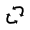
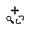
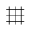
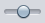
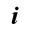

{kind=link}
General information
PalenqueAnimation.jar)
from the latest release page.
PalenqueAnimation.jar file,
or (should it not start) please enter the following command:
java -jar PalenqueAnimation.jar
Features overview
The PalenqueAnimation application can be used to play over the entire transformational process (from step 5 to step11) interactively in 3D. You can view the scene from any angle, stop and restart the progress at any time, modify the playback speed and switch the grid on/off at will. Also a screenshot in the desired resolution can be taken at any state, and then it can be saved to a file or copied to the clipboard. Without user interaction, the camera moves automatically according to a predefined program, but you can change its position and the viewing angle anytime using the mouse device. There are 5 different modes (play, move, rotate, zoom and combined) for the interactions, and the current mode defines, what type of operations can be executed with the help of the mouse movements and the buttons (see below in detail).
{kind=link}
The application has a specialized rendering "engine" that is very similar to the normalized mode painting we have already seen in the PalenqueLayout program (in fact the rendering routines of the PalenqueAnimation have been integrated in a slightly modified version into the PalenqueLayout as normalized mode drawing). It means that 1. the focal length is continously updated during the resizing of the window, with the purpose of assuring an integer grid square size (if the zoom level is 1.0, and there are no rotations); 2. the transformations are precomputed in memory, the adjacent line segments are joined together and then they are painted in one step, resulting in a nicer rendering.
The original idea for the use of this application was to embed it inside the web page as an applet, but this eventually turned out to be not really practical for several reasons: 1. the applets recently become a very bad reputation and without signing they are effectively disabled; 2. they cannot be used on mobile devices; 3. the loading process is a bit slow and cumbersome. So, this idea was dropped, and the program is presented now on its own, as a standalone software, while for the demonstration inside the browser another application was created (PalenqueAniGifMaker), which itself can generate animated GIFs according to predefined parameters. But of course the GIFs have the disadvantage of not being interactive, therefore, if you can run Java applications on your computer (and you are not against installing and enabling the JRE), it may be advisable to follow the steps of the solution using the more feature rich PalenqueAnimation.
Function descriptions
The functions can be accessed by clicking the buttons on the toolbar or by using their shortcut keys:
{kind=link}
Play / stop ( , Space ): By clicking this button (or by pressing Space) the playback can be started or stopped at any time.
To start ( , Home ): Jump back to the start of the animation.
Frame slider ( , ←, → ): The current frame of the animation can be set (even during playback) by clicking and moving the slider:
{kind=link}
The left and right arrow keys can be used to skip forward and backward in the transformation process. Holding a modifier key down during the press of an arrow key changes the skip distance: with Shift it is smaller, with Ctrl (or Meta) it is larger, and with Alt held down the playback skips forward to the next step or back to the start of the current step.
To end ( , End ): Jump to the end of the animation and stop the playback. Pressing the Play button (or Space) restarts the animation again.
Play mode ( , P, 1 ): In this mode pressing the left mouse button starts or stops the animation (just like the Play button or the Space key), while the right button jumps back to the start of the animation. The mouse movements have no effect in this operation mode.
Move mode ( , M, 2 ): In this mode dragging the mouse on the display panel (i.e. holding the left mouse button down while moving the pointer) lets the scene move together with the mouse. Clicking with the right button resets the moving state, that is the center of the grid will be placed back to the center of the scene.
Rotate mode ( , R, 3 ): In this mode the scene can be rotated by clicking the left button and moving the pointer. Clicking with the right button resets the rotation to the default (i.e. to an unrotated scene).
Zoom mode ( , Z, 4 ): In zoom mode dragging the mouse pointer up and down lets the zoom increase and decrease, while the right button resets the zoom level to 1.
Combined mode: move, rotate, zoom ( , C, 5 ): In combined mode (which is the default) the dragging operation has a different meaning depending on which mouse button is pressed during it:
| Button(s) | Operation |
|---|---|
| Left | Move |
| Right | Rotate |
| Left & Right | Zoom |
Reset state
(
 ,
Backspace
):
With this function the state of the current mode can be reset to the default.
In play, move, rotate and zoom mode it has the same effect as pressing the
right mouse button, and in combined mode it resets the move, rotate and zoom
state together in one step.
,
Backspace
):
With this function the state of the current mode can be reset to the default.
In play, move, rotate and zoom mode it has the same effect as pressing the
right mouse button, and in combined mode it resets the move, rotate and zoom
state together in one step.
Automatic camera move ( , A ): If this function is enabled (which is the default), then the camera moves automatically during the animation, following a predefined path. Turning this function off freezes the current state, and switching it on again puts the camera back to the position determined by the "autopilot". Performing any operation (moving, rotating or zooming) on the scene causes this function to turn off and puts the control completely in the hand of the user.
Grid ( , G, 6 ): The 51x51-sized grid can be made visible or hidden by using this function.
Speed slider ( , ↑, ↓ ): With this slider (or the up and down arrow keys) the speed of the playback can be set from (very) slow to (very) fast in 7 steps.
Screenshot ( , S ): Using this function a screenshot can be taken from the current scene in the desired resolution. After invoking this function the screenshot window is shown (which is the standard save dialog extended by the capability of changing the resolution and copying the image to the clipboard):
{kind=link}
First you should set the desired resolution (if the current one is not appropriate), then enter a file name (extension is not needed) and click save (or hit Enter) in order to save the image to a PNG file, or click the Clipboard button (or press Alt+C) to copy it to the clipboard instead.
Information ( , Alt+I ): Displays a short informational text about the application and the project:
{kind=link}
To open a link in the default browser you should just click on it with the left button, while pressing the right button pops up a context menu, where you can also copy the link to the clipboard.